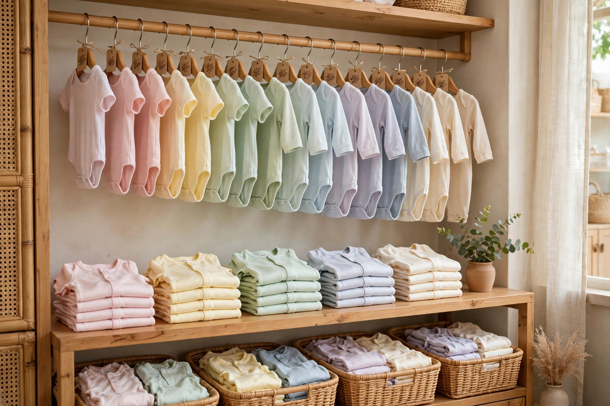

Website cho shop mẹ và bé cần có gì: chọn size theo tháng tuổi, bảng cân nặng, đặt hàng nhanh cho mẹ bận
Một tay bế con đang ngủ, một tay lướt điện thoại mua đồ cho bé — khoảnh khắc mua sắm quen thuộc của mẹ bỉm sữa, và là lý do website shop mẹ và bé phải đặt hàng được trong vài lần chạm.
Chín rưỡi tối, con vừa ngủ say trên tay, bạn mới có một khoảng yên tĩnh hiếm hoi trong ngày. Tranh thủ lướt điện thoại mua cho con bộ đồ mới — bộ cũ mặc mới hai tuần đã chật vai, cúc bấm kéo căng. Bạn thấy một bộ bodysuit màu be rất xinh, giá cũng vừa túi, nhưng dừng lại ở đúng chỗ chọn size: size ghi "6–9 tháng", con bạn 7 tháng, nặng 8,5 kg, dài 70 cm — vậy là vừa hay chật? Không có bảng cân nặng đi kèm, không có chỗ nào ghi bé 8,5 kg nên lấy size nào, bạn đành nhắn tin hỏi shop. Nhắn xong, con cựa mình khóc, bạn đặt điện thoại xuống dỗ con, và sáng hôm sau tin nhắn đã trôi tuột xuống dưới, đơn hàng thì chưa bao giờ được đặt.
Chủ shop mẹ và bé nào cũng quen cảnh này — không phải vì khách không muốn mua, mà vì website của shop bắt một người mẹ đang bận phải làm thêm quá nhiều việc mới mua được một món đồ. Ngay dưới đây, mình sẽ cùng bạn bóc tách vì sao cách làm hiện tại của phần lớn shop mẹ và bé đang làm mất đơn, những mục một website cho shop mẹ và bé thực sự cần có, và cách bạn tự kiểm tra trước khi bỏ tiền làm web.
Vì sao shop mẹ và bé đông khách vẫn mất đơn: ba lỗi quen thuộc
Lỗi thứ nhất là bảng size chỉ ghi tháng tuổi, không ghi cân nặng và chiều cao. Trẻ cùng 6 tháng tuổi có bé 7 kg, có bé 9 kg — chênh nhau hẳn một size. Mẹ chọn theo tháng tuổi rồi nhận về mặc chật, phải đổi trả, vừa tốn tiền ship hai chiều vừa mất niềm tin vào shop. Với đồ trẻ con, tháng tuổi chỉ là con số tham khảo, cân nặng và chiều cao mới là thứ quyết định bộ đồ có vừa người con mình không — mà bảng size trên web của nhiều shop lại không có hai cột này. Mẹ không dám đoán, mẹ nhắn hỏi, mà nhắn hỏi thì phải chờ, chờ lâu thì con khóc, đơn hàng trôi luôn.
Lỗi thứ hai là ảnh sản phẩm là ảnh mẫu chung, không có ảnh thật và mô tả chất liệu. Mẹ mua đồ cho con soi kỹ hơn mua đồ cho mình rất nhiều: vải có mềm không, có phải cotton hay sợi tre không, cúc bấm ở đâu, có cọ vào da bé không, giặt máy có bai dão không. Ảnh lấy từ nhà cung cấp thì lung linh nhưng không nói được những điều đó, và mẹ thì không thể sờ được qua màn hình. Khi web không có ảnh chụp thật từng món, không ghi rõ chất liệu và cách giặt, mẹ sẽ chọn shop khác — nơi cô ấy nhìn thấy đúng thứ mình sắp mua, chứ không phải một tấm ảnh đẹp chung chung.
Lỗi thứ ba là đặt hàng phải nhắn tin chờ trả lời. Mẹ bỉm sữa mua sắm trong những khoảng thời gian vụn vặt: lúc con ngủ, lúc chờ sữa nguội, lúc đang bế con trên tay. Một quy trình đặt hàng bắt mẹ phải nhắn tin, chờ shop trả lời, xác nhận size, xác nhận ship rồi mới chuyển khoản là một quy trình được thiết kế cho người rảnh — mà khách của bạn thì không rảnh. Mỗi bước chờ đợi là một cơ hội để con khóc, để việc khác chen vào, để mẹ quên mất mình đang định mua gì. Đơn hàng của shop mẹ và bé không mất vì khách chê giá, mà mất vì khách không kịp mua xong.
7 mục một website shop mẹ và bé thực sự cần có
Một website cho shop mẹ và bé không cần nhiều trang, càng không cần hiệu ứng cầu kỳ. Nó cần đúng những mục dưới đây — mỗi mục giải quyết một câu hỏi cụ thể mà mẹ luôn hỏi trước khi bấm đặt hàng.
1. Bảng size theo tháng tuổi kèm cân nặng và chiều cao — tra ngay dưới mỗi sản phẩm
Đây là mục quan trọng nhất với shop mẹ và bé, vì chọn sai size là lý do đổi trả nhiều nhất. Bảng size phải nằm ngay dưới giá của từng sản phẩm, mẹ không phải cuộn đi đâu tìm: một bảng có đủ ba cột — tháng tuổi, cân nặng, chiều cao — ví dụ size 6–9 tháng tương ứng 7–9 kg và 68–74 cm. Tốt hơn nữa là có ô gợi ý: mẹ nhập cân nặng và chiều cao của con, web tự khoanh size nên lấy. Nút chọn size nằm ngay dưới giá, chạm một ngón tay là chọn xong, không cần phóng to thu nhỏ. Bảng này cũng là thứ giúp bạn giảm hẳn tin nhắn "bé nhà em 8,5 kg mặc size nào chị ơi" — vì mẹ tự tra được trong vài giây, lúc nửa đêm, không cần chờ bạn trả lời.
2. Ảnh thật và mô tả chất liệu rõ ràng — vải gì, cúc ở đâu, giặt ra sao
Mỗi sản phẩm cần ảnh chụp thật của chính món đồ bạn bán: mặt trước, mặt sau, cận chất vải, cận cúc bấm và đường may. Kèm theo đó là mô tả ngắn gọn mà đủ ý: chất vải gì — cotton 100%, sợi tre hay cotton pha — độ co giãn ra sao, cúc bấm ở đáy hay khóa kéo ở lưng, có phù hợp da bé nhạy cảm không, giặt máy được không. Mẹ đọc một lượt là hình dung được bộ đồ mặc lên người con mình sẽ như thế nào, và đó chính là thứ khiến cô ấy bấm đặt hàng thay vì nhắn hỏi thêm. Ảnh thật còn có một tác dụng khác: khi hàng giao tới tay giống hệt ảnh trên web, mẹ tin shop, và lần sau cô ấy mua lại không cần hỏi gì nữa.
3. Giỏ hàng và đặt hàng COD — mẹ đặt xong trong 3 lần chạm
Mẹ đang bế con bằng một tay thì chỉ còn một tay để mua sắm, nên quy trình đặt hàng phải ngắn nhất có thể: chọn size, bấm "đặt hàng", điền tên, số điện thoại và địa chỉ là xong — ba lần chạm, không cần tạo tài khoản, không cần chuyển khoản trước. Khách nhận hàng mới trả tiền (COD) đúng thói quen mua bán quen thuộc, mẹ không phải lăn tăn chuyển khoản cho một shop lạ trong khi tay còn đang bế con. Form đặt hàng càng ít ô càng tốt: bỏ bớt những trường không cần thiết, để lại đúng những gì bạn cần để giao hàng. Một đơn hàng được đặt xong trong lúc con còn đang ngủ say là một đơn hàng bạn đã giữ được.
4. Combo theo độ tuổi — mua một lần đủ bộ, mẹ khỏi chọn lẻ từng món
Mẹ mới sinh con đầu lòng thường không biết cần mua những gì, mua bao nhiêu là đủ. Mục combo theo độ tuổi giải quyết đúng nỗi lúng túng đó: combo sơ sinh 0–3 tháng gồm 5 bodysuit, 3 quần dài, 2 mũ và 2 bao tay; combo 6–12 tháng gồm đồ mặc nhà và đồ đi chơi; combo đi sinh, combo đầy tháng. Mẹ chọn một combo là xong, không phải lội từng trang sản phẩm để nhặt lẻ từng món, và bạn cũng bán được nhiều món hơn trong một đơn. Ghi rõ trong mỗi combo gồm những gì, size nào, tổng giá bao nhiêu và tiết kiệm hơn mua lẻ bao nhiêu — mẹ nhìn một bảng là quyết định được ngay, không cần nhắn hỏi "combo này gồm gì em".
5. Chính sách đổi trả khi mặc không vừa — ghi rõ ngay trang sản phẩm
Đồ trẻ con mua online luôn có rủi ro mặc không vừa, và mẹ nào cũng tính trước chuyện đó trước khi bấm mua. Vì vậy chính sách đổi trả phải nằm ngay dưới nút đặt hàng, không giấu trong một trang riêng khó tìm: đổi size miễn phí trong 7 ngày nếu còn tem mác, đổi sang size lớn hơn hay nhỏ hơn đều được, mẹ chỉ cần nhắn Zalo kèm ảnh là shop gửi size mới đi. Ghi rõ điều kiện ngay từ đầu — hàng đã giặt thì không đổi, hàng sale thì đổi trong 3 ngày — để mẹ không phải hỏi lại và bạn không phải giải thích lại từng người. Một chính sách đổi trả rõ ràng làm được điều mà ảnh đẹp không làm được: khiến mẹ dám bấm mua ngay cả khi cô ấy chưa chắc size.
6. Nút gọi điện và Zalo nổi — mẹ hỏi size được trả lời ngay
Có những câu hỏi bảng size không trả lời được: "bé nhà em 9 kg mà dài có 68 cm thì lấy size nào", "bé da nhạy cảm mặc vải này có ngứa không". Lúc đó mẹ cần một người tư vấn, và nút gọi cùng nút Zalo ghim nổi trên màn hình giúp cô ấy chạm một cái là liên hệ được ngay, không phải thoát ra, tìm số, lưu số rồi mới gọi. Với shop mẹ và bé, Zalo còn là kênh mẹ gửi ảnh bé, gửi ảnh cân nặng trong sổ khám để shop tư vấn size cho chính xác — xem sản phẩm trên web, nhắn Zalo gửi thông tin bé, shop tư vấn và chốt đơn trong cùng một cuộc trò chuyện. Nhanh cho cả hai phía, và bạn có sẵn thông tin của bé để lần sau tư vấn còn nhanh hơn.
7. Đánh giá của mẹ đã mua — bé bao nhiêu cân, mặc size nào vừa
Với đồ trẻ con, đánh giá có giá trị nhất không phải là "đồ đẹp lắm shop ơi" mà là những dòng ghi rõ thông số thật: "bé nhà mình 8,5 kg, 7 tháng, mặc size 9–12 tháng vừa đẹp", "vải mềm, giặt 5 lần chưa bai", "cúc bấm chắc, bé mặc cả ngày không hằn da". Mục này cần tên thật của mẹ, cân nặng và tháng tuổi của bé, size đã mua và cảm nhận cụ thể — kèm được ảnh thật bé đang mặc đồ thì càng tốt, với sự đồng ý của mẹ. Năm đến bảy đánh giá như vậy, đặt ngay dưới bảng size, có tác dụng hơn cả một trang giới thiệu dài: mẹ đang phân vân size sẽ đối chiếu bé nhà mình với bé trong đánh giá và tự tin bấm mua, thay vì nhắn hỏi bạn rồi chờ trả lời.
👉 Xem thư viện mẫu web theo ngành nghề tại Web Khởi Nguồn
Đồ sơ sinh xếp theo size, màu pastel, chất vải nhìn là thấy mềm — cách trưng bày này trên website giúp mẹ chọn đúng size ngay lần đầu.
Mẹ mua lần đầu và mẹ mua quen dùng website của shop theo hai cách hoàn toàn khác nhau
Mẹ mua lần đầu — người đang mang bầu tháng cuối, hoặc mẹ có con đầu lòng vài tháng tuổi — vào web của bạn với tâm thế dò xét. Cô ấy chưa tin shop, chưa biết size nhà bạn có chuẩn không, chưa biết vải có đúng như ảnh không. Với nhóm này, bảng size kèm cân nặng, ảnh thật và mô tả chất liệu, chính sách đổi trả rõ ràng và đánh giá của mẹ đã mua là bốn thứ quan trọng nhất; thiếu một trong bốn, cô ấy sẽ lướt sang shop khác. Mẹ mua lần đầu cũng là nhóm hay hỏi nhất, nên nút gọi và Zalo nổi phải luôn trong tầm tay cô ấy — trả lời nhanh một câu hỏi về size lúc nửa đêm có thể là khởi đầu của một khách quen mua đều mỗi tháng.
Mẹ mua quen — người đã mua ở shop vài lần, đã biết size nhà bạn, đã tin vải và tin cách bạn đóng gói — lại dùng web với một mục đích rất thực dụng: vào xem có mẫu mới đúng độ tuổi của con không, có combo nào hợp không, rồi đặt lại trong một phút. Với nhóm này, giỏ hàng đặt nhanh, combo theo độ tuổi và mục ưu đãi khách quen là quan trọng nhất; cô ấy không cần xem lại bảng size vì đã thuộc rồi, và cũng là nhóm hay giới thiệu bạn bè trong các hội nhóm mẹ bỉm sữa nhất — một đường link web gọn gàng gửi qua Zalo dễ chia sẻ hơn hẳn một bài đăng fanpage đã trôi. Hiểu hai hành vi này, bạn sẽ biết vì sao website shop mẹ và bé phải vừa có đủ bảng size, ảnh thật và đổi trả rõ ràng cho mẹ mới, vừa có đặt hàng nhanh và combo cho mẹ quen — thiếu một phía là mất một nửa cơ hội.
Gói website trọn gói 586.000đ tại Web Khởi Nguồn gồm những gì cho shop mẹ và bé?
Nghe giá 586.000đ, nhiều chủ shop nghi ngờ ngay: rẻ vậy thì web làm ra chắc chỉ để "cho có", được vài hôm lại lỗi. Nghi ngờ đó có cơ sở nếu giá rẻ đến từ việc cắt xén tính năng. Còn ở đây, giá thấp đến từ cách làm: shop nhỏ chỉ cần 1 đến 5 trang đúng nhu cầu, cấu trúc trang cho cửa hàng bán hàng đã được đóng gói thành quy trình chuẩn, đội ngũ không phải ngồi lập trình lại từ con số không cho từng khách, nên chi phí dồn vào đúng phần nội dung và giao diện riêng của shop bạn. Bạn có thể xem chi tiết tại bảng giá và mục gói 586.000đ gồm những gì trên trang chủ.
Cụ thể với một shop mẹ và bé, gói bàn giao gồm: website 1–5 trang theo yêu cầu (trang giới thiệu shop, trang sản phẩm với bảng size theo tháng tuổi và cân nặng, trang combo theo độ tuổi, trang liên hệ — bố cục theo đúng ngành mẹ và bé và màu sắc thương hiệu của shop); chuẩn mobile tuyệt đối vì phần lớn mẹ xem bằng điện thoại, một tay bế con một tay lướt; tên miền năm đầu, hosting và chứng chỉ bảo mật SSL đã gồm sẵn trong giá; giỏ hàng và đặt hàng COD để mẹ đặt xong trong vài lần chạm, nhận hàng mới trả tiền; form liên hệ và form đặt hàng thu thông tin khách; cụm nút gọi — Zalo — bản đồ nổi một chạm để mẹ hỏi size và tìm đường tới shop. Web dựng xong trong 1–3 ngày, kèm hướng dẫn sử dụng chi tiết từ A–Z để bạn tự thêm sản phẩm mới, tự sửa bảng size, đăng combo mới mỗi tuần mà không cần biết kỹ thuật, và bảo hành kỹ thuật trọn đời. Chính sách làm thử trước, hài lòng mới thanh toán, không cần đặt cọc — bạn xem trước bản dựng của chính shop mình rồi mới quyết định. Khi shop mở thêm chi nhánh hay cần bán hàng bài bản hơn, bạn có thể nâng cấp lên gói website cao cấp mà không phải làm lại từ đầu.
Cách tự kiểm tra một website shop mẹ và bé trước khi quyết định làm
Dù bạn làm web ở đâu, hãy tự kiểm tra bằng trải nghiệm của chính khách hàng, với bốn bước đơn giản sau. Bước một: lấy điện thoại của bạn, bật 4G, đóng vai một mẹ đang bế con, tay kia lướt web mua một bộ bodysuit cho bé 8,5 kg. Đếm số lần chạm từ lúc trang mở tới lúc bạn đặt xong đơn — nếu phải qua quá 4 đến 5 lần chạm, hoặc phải nhắn tin hỏi size thì mới mua được, trang đó đang làm mất đơn mỗi ngày. Bước hai: thử tra bảng size — tìm một sản phẩm, xem bảng có đủ cột tháng tuổi, cân nặng và chiều cao không, và mẹ có tự chọn được size cho bé nhà mình mà không cần hỏi ai không. Bước ba: thử tự thêm một sản phẩm mới và sửa bảng size, xem thao tác mất bao lâu; nếu phải nhắn nhờ người khác làm hộ, về lâu dài bảng size sẽ lại thành bảng cũ, và bạn quay về đúng lỗi thứ nhất ở đầu bài. Bước bốn: bấm thử nút gọi và nút Zalo ngay trên trang, xem có ra đúng số của shop không; gửi thử một đơn hàng qua giỏ hàng COD, xem thông tin có tới tay bạn đầy đủ tên, số điện thoại, địa chỉ, sản phẩm và size khách đã chọn không; mở lại trang bằng 4G vào đúng giờ cao điểm tối, mạng yếu, xem trang và ảnh sản phẩm có hiện nhanh không — mẹ của bạn cũng đang mở trang trong đúng điều kiện như vậy, thường là lúc con vừa ngủ và cô ấy chỉ có vài phút yên tĩnh.
Quay lại cảnh chín rưỡi tối ở đầu bài: bạn không thể làm con ngừng khóc, nhưng bạn có thể khiến một người mẹ bận rộn mua được bộ đồ cho con mình trong vài lần chạm, không cần chờ ai trả lời. Bảng size tự tra được, chất liệu tự đọc được, đơn hàng tự đặt được và nhận hàng mới trả tiền — lúc đó tin nhắn còn lại chỉ là "chị ơi bé nhà em mặc vừa đẹp lắm, cho em đặt thêm combo 9–12 tháng nhé", đúng kiểu tin nhắn mà chủ shop mẹ và bé nào cũng muốn nhận. Nếu bạn đang cân nhắc làm website cho shop của mình, cứ xem trước các mẫu theo ngành nghề, đối chiếu với bảy mục trong bài này, rồi quyết định cũng chưa muộn.
Muốn shop của bạn có website như vậy?
Xem trước các mẫu demo theo ngành nghề, ưng mẫu nào làm mẫu đó — trọn gói 586.000đ, xem mẫu trước khi quyết định.